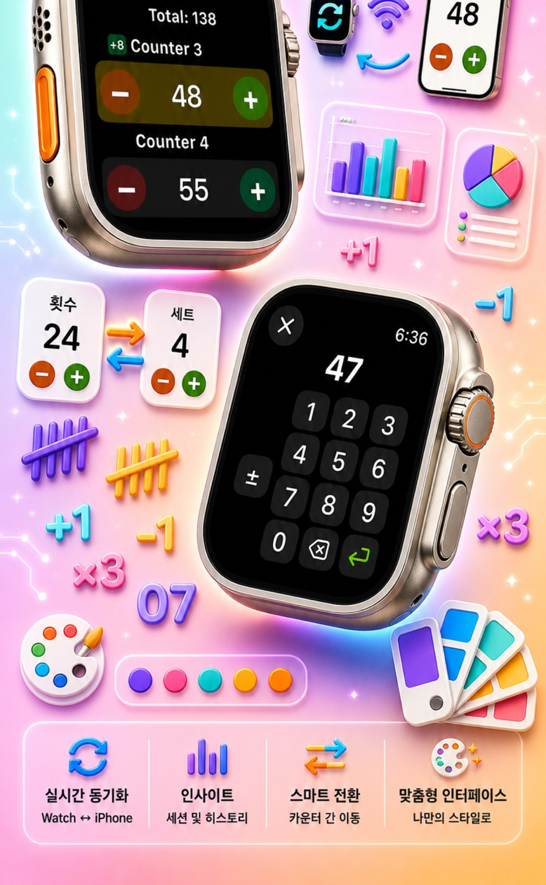
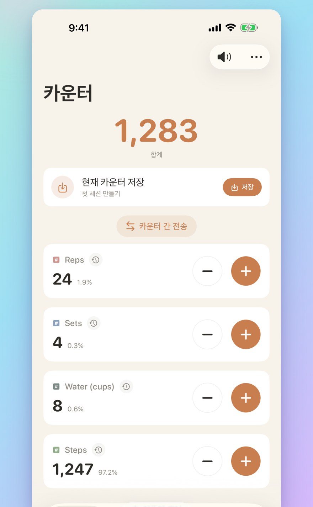
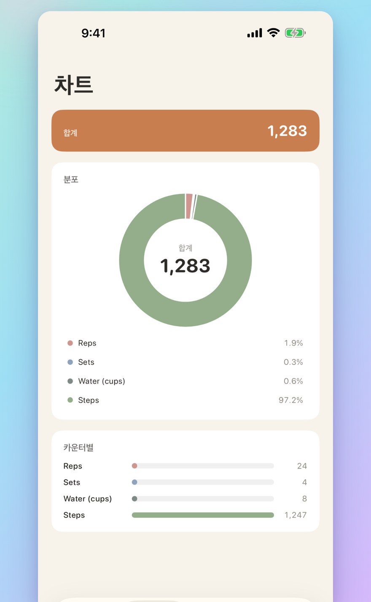
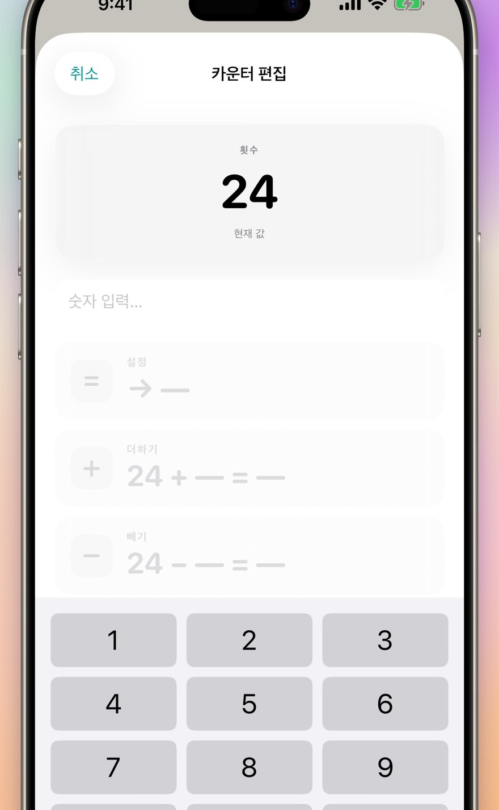
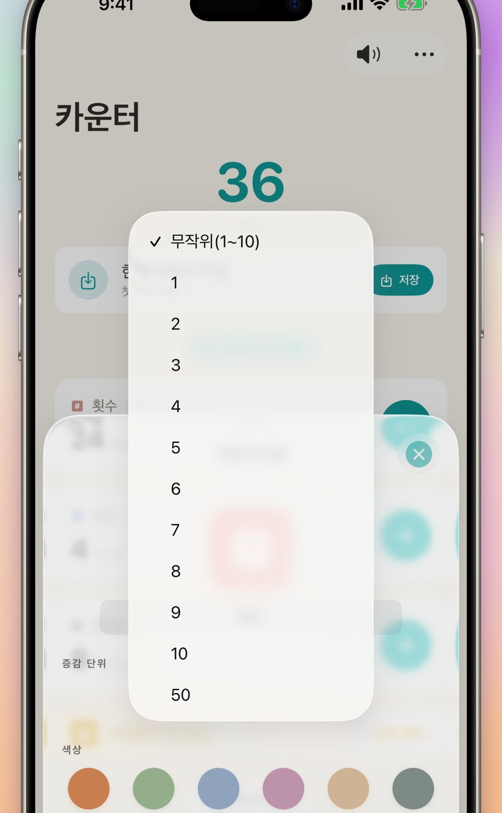
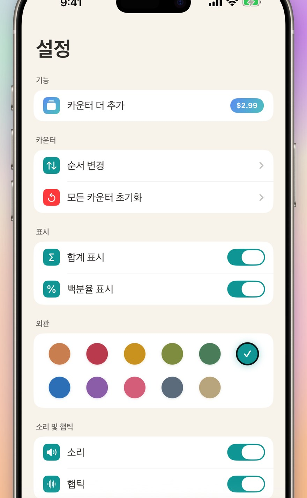

카운터 123
Watch 동기화·클릭·점수
신규: 홈 화면 위젯 — App을 열지 않고 위젯에서 바로 +/- 탭. 카운터·클리커, Apple Watch 동기화, 랜덤 모드, 차트, 기록.



맞춤 카운터
활동, 게임, 루틴, 목록마다 별도의 카운터를 만드세요
카운터마다 이름과 색상으로 개인화
즉시 입력 & 일괄 연산
아무 카운터나 탭해서 시작값 직접 설정 — 0부터 다시 시작할 필요 없음
일괄 가감: 원하는 숫자만큼 한 번에 더하거나 빼기

랜덤 모드
탭할 때마다 1~10 사이의 새 값을 무작위로 굴립니다
+ 버튼으로 더하고 - 버튼으로 무작위 값을 뺄 수 있습니다

합계 & 차트
전체 카운터의 합계를 한눈에
백분율 보기: 각 카운터의 비중을 시각화
기록 & 공유
변경 이력: 가산·감산·편집 모두 기록
카운터 세트를 저장하고 언제든 다시 불러오기

Apple Watch 실시간 동기화
iPhone 또는 Apple Watch에서 변경하면 두 기기가 함께 동기화됩니다
네이티브 watchOS 앱 — 껍데기만 있는 컴패니언이 아닙니다
iPhone·iPad·Apple Watch 모두 지원
모든 화면 크기에 최적화된 레이아웃
iPad는 더 많은 카운터를 한 번에 표시, Split View 지원